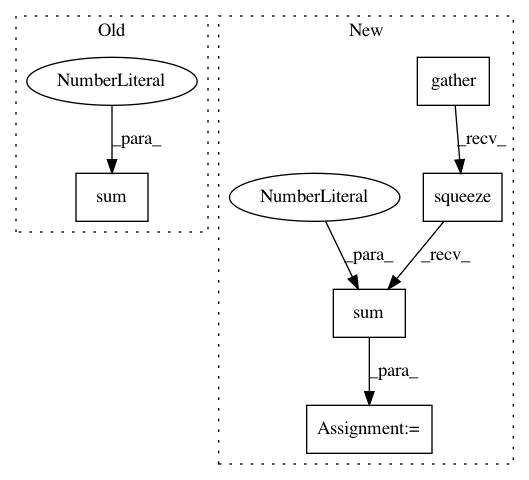

adae08c077d07f6da6c95d995d8211cf9e9590e4,eval_utils.py,,eval_split,#Any#Any#Any#Any#,94
Before Change
with torch.no_grad():
seq, seq_logprobs = model(fc_feats, att_feats, att_masks, opt=eval_kwargs, mode="sample")
seq = seq.data
perplexity = seq_logprobs.sum(1) / ((seq>0).float().sum(1)+1)
// Print beam search
if beam_size > 1 and verbose_beam:
After Change
seq, seq_logprobs = model(fc_feats, att_feats, att_masks, opt=eval_kwargs, mode="sample")
seq = seq.data
entropy = - (F.softmax(seq_logprobs, dim=2) * seq_logprobs).sum(2).sum(1) / ((seq>0).float().sum(1)+1)
perplexity = - seq_logprobs.gather(2, seq.unsqueeze(2)).squeeze(2).sum(1) / ((seq>0).float().sum(1)+1)
// Print beam search
if beam_size > 1 and verbose_beam:
for i in range(loader.batch_size):
In pattern: SUPERPATTERN
Frequency: 3
Non-data size: 5
Instances
Project Name: ruotianluo/ImageCaptioning.pytorch
Commit Name: adae08c077d07f6da6c95d995d8211cf9e9590e4
Time: 2019-04-11
Author: rluo@ttic.edu
File Name: eval_utils.py
Class Name:
Method Name: eval_split
Project Name: pcyin/tranX
Commit Name: 65c51a90b9034c934e4f91d6fe35d6a28c3b2f7e
Time: 2018-10-28
Author: pcyin@cs.cmu.edu
File Name: model/seq2seq.py
Class Name: Seq2SeqModel
Method Name: score_decoding_results